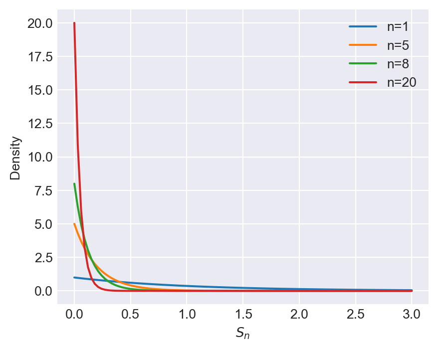
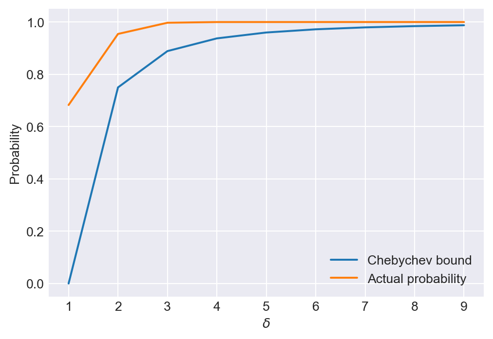
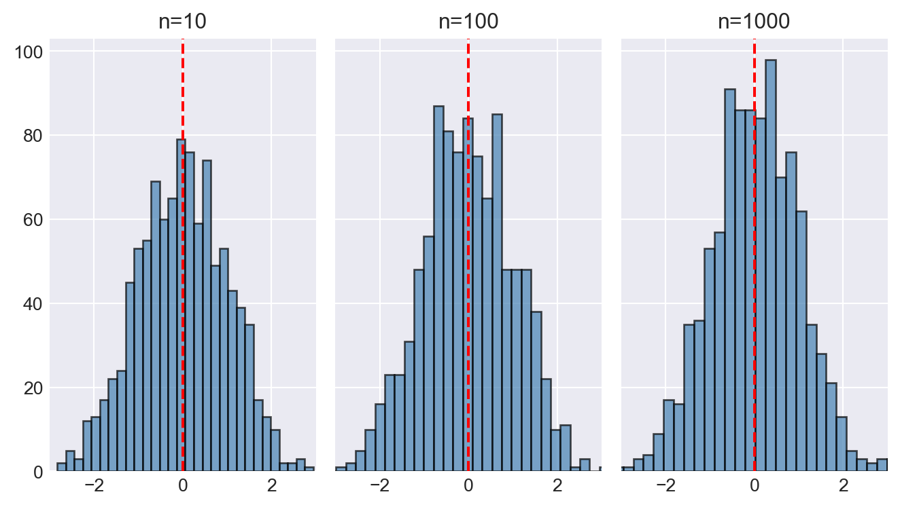
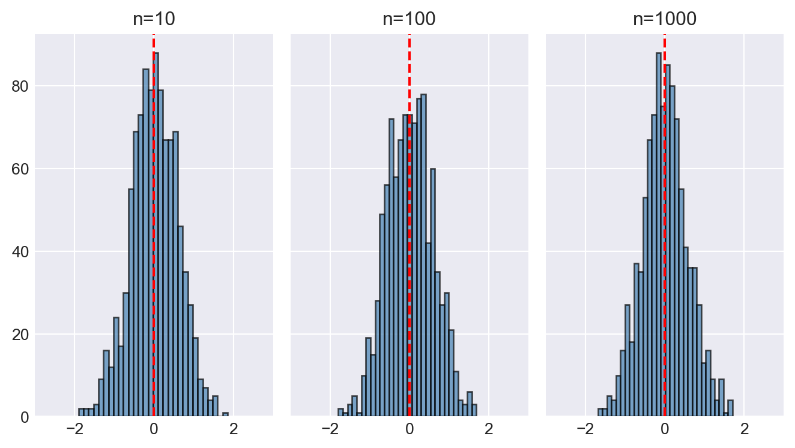
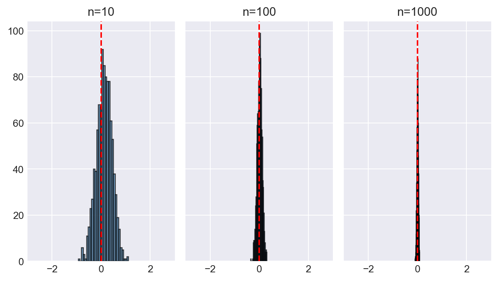
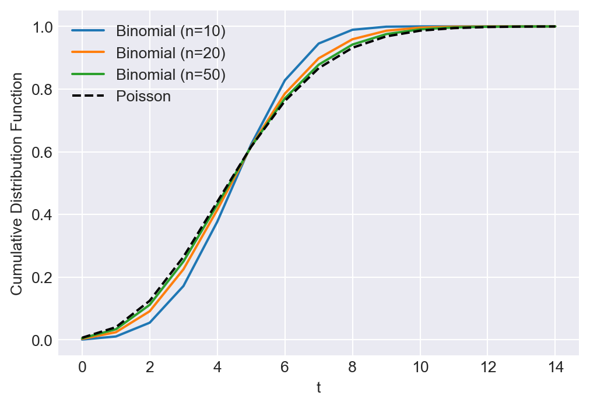
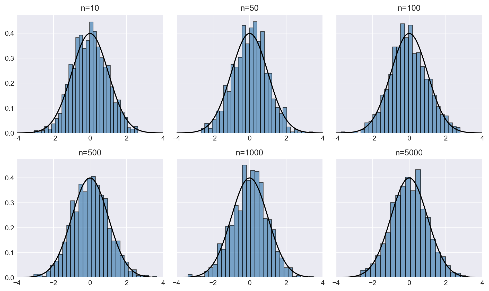

import numpy as np
import matplotlib.pyplot as plt
import pandas as pd
import scipy.stats as stats
plt.style.use('seaborn-v0_8-darkgrid')27 The Theory of Linear Regression with One Regressor
27.1 Introduction
This chapter provides the theoretical foundation for the simple linear regression model with a single regressor. We present extended assumptions for the model and study both the asymptotic and exact sampling distributions of the OLS estimator and the \(t\) statistic.
We first introduce the extended least squares assumptions and discuss some properties of the OLS estimator and the \(t\)-statistic under these assumptions. Next, we cover the basics of asymptotic distribution theory, including the law of large numbers and the central limit theorem. We then present both the asymptotic and exact sampling distributions of the OLS estimator and the \(t\)-statistic. Finally, we introduce the weighted least squares estimator for the case where the functional form of heteroskedasticity is known.
This chapter is supplemented by Appendix C, where we provide additional properties of some well-known distributions.
27.2 The extended least squares assumptions
The linear regression model with one regressor is \[ Y_i = \beta_0 + \beta_1 X_i + u_i, \quad i = 1, \ldots, n, \tag{27.1}\] where \(Y_i\) is the dependent variable, \(X_i\) is the regressor, and \(u_i\) is the error term. In Chapter 14, we derive the OLS estimators of \(\beta_0\) and \(\beta_1\) as \[ \begin{align*} \hat{\beta}_1 &= \frac{\sum_{i=1}^n (X_i - \bar{X})(Y_i - \bar{Y})}{\sum_{i=1}^n (X_i - \bar{X})^2},\\ \hat{\beta}_0 &= \bar{Y} - \hat{\beta}_1 \bar{X}, \end{align*} \] where \(\bar{X} = \frac{1}{n}\sum_{i=1}^n X_i\) and \(\bar{Y} = \frac{1}{n}\sum_{i=1}^n Y_i\).
We consider Equation 27.1 under the following extended assumptions.
The first three assumptions are the usual assumptions that ensure the large sample properties of the OLS estimator and the \(t\)-statistic. The last two assumptions are additional assumptions that are required to show further properties of the OLS estimator. In particular, the fourth assumption is required to show that the OLS estimator is the best linear unbiased estimators (BLUE). The fifth assumption is required to show the exact sampling distribution of the OLS estimator and the \(t\)-statistic. We collect these results in the following theorems.
Theorem 27.1 Under the first three assumptions, the OLS estimators of \(\beta_0\) and \(\beta_1\) are unbiased, consistent and have asymptotic normal distributions in large samples. Specifically, we have \[ \begin{align*} &\hat{\beta}_1 \stackrel{A}{\sim} N\left(\beta_1, \sigma^2_{\hat{\beta}_1}\right),\,\text{where}\quad\sigma^2_{\hat{\beta}_1} = \frac{1}{n}\frac{\var\left((X_i - \mu_X)u_i\right)}{\left(\sigma^2_X\right)^2},\\ &\hat{\beta}_0 \stackrel{A}{\sim} N\left(\beta_0, \sigma^2_{\hat{\beta}_0}\right),\, \text{where}\quad\sigma^2_{\hat{\beta}_0} = \frac{1}{n}\frac{\var\left(H_i u_i\right)}{\left(\E(H_i^2)\right)^2}\,\,\text{and}\,\, H_i = 1 - \frac{\mu_X}{\E(X_i^2)}X_i. \end{align*} \]
Theorem 27.2 (The Gauss-Markov theorem) Under the first four assumptions, the OLS estimators of \(\beta_0\) and \(\beta_1\) are the best linear unbiased estimators (BLUE). The variances of the OLS estimators simplify to \[ \begin{align*} &\sigma^2_{\widehat{\beta}_1} = \frac{\sigma^2_u}{n\sigma^2_X}\,\text{and}\,\sigma^2_{\hat{\beta}_0} = \frac{\E(X^2_i)\sigma^2_u}{n\sigma^2_X}. \end{align*} \]
Theorem 27.3 (Exact sampling distributions of OLS estimators) Under all five assumptions, conditional on \(\{X_i\}_i^n\), the OLS estimators have exact normal sampling distributions with variances given in Theorem 27.2. The t-statistic for testing hypotheses about \(\beta_0\) and \(\beta_1\) follows the Student t-distribution with \(n - 2\) degrees of freedom.
Theorem 27.1 suggests that we can make inference about the population parameters \(\beta_0\) and \(\beta_1\) using t-statistics and confidence intervals when the sample size is large. In contrast, Theorem 27.3 provides the exact sampling distributions of the OLS estimators and the t-statistic under all five assumptions. In this case, a large sample size is not required for inference.
27.3 Introduction to asymptotic distribution theory
We use asymptotic distribution theory to investigate the distribution of statistics, including estimators, test statistics, and confidence intervals, in large samples. For a statistic, our goal is to determine its asymptotic distribution when the sample size is large and then use this distribution as an approximation to the exact sampling distribution. Therefore, we require a sufficiently large sample size when making inference based on the asymptotic distribution.
There are two important tools in asymptotic distribution theory: the law of large numbers (LLN) and the central limit theorem (CLT). In this section, we review some important probability concepts and inequalities that will help us apply these tools effectively.
Definition 27.1 (Convergence in probability) The sequence of random variables \(\{S_n\}\) converges in probability to a random variable \(S\) if for any \(\epsilon>0\), we have \[ \lim_{n\to\infty} P(|S_n - S| > \epsilon) = 0. \] We denote this convergence as \(S_n \stackrel{p}{\to} S\) or \(\text{plim}_{n\to\infty} (S_n -S) = 0\).
For any \(\epsilon>0\), we have the following relations: \[ \begin{align*} \{|S_n-S|>\epsilon\}\subseteq\{|S_n-S|\geq\epsilon\}\subseteq\{|S_n-S|>\epsilon/2\}. \end{align*} \]
Therefore, we have \[ P(|S_n - S| > \epsilon) \leq P(|S_n - S| \geq \epsilon) \leq P(|S_n - S| > \epsilon/2). \]
Thus, \(S_n \stackrel{p}{\to} S\) if and only if \(P(|S_n - S| \geq \epsilon) \to 0\) for any \(\epsilon>0\). That is, we can replace the strict inequality in the definition of convergence in probability with a weak inequality.
Consider the event \(A=\{|S_n-S|>\epsilon\}\) given in Definition 27.1. Its complement is \(A^c=\{|S_n-S|\leq\epsilon\}\). Since \(P(A^c)=1-P(A)\), we can alternatively state the definition of convergence in probability as, for any \(\epsilon>0\), \[ S_n \stackrel{p}{\to} S \iff \lim_{n\to\infty}P(|S_n - S| \leq \epsilon) = 1. \]
Example 27.1 (Convergence in probability) Let \(X\) be a random variable that has an exponential distribution with parameter \(\lambda>0\). Then, its pdf and cdf are given by \[ \begin{align*} f(x) = \begin{cases} \lambda e^{-\lambda x}, & \quad x \geq 0,\\ 0, & \quad x < 0. \end{cases} \end{align*} \]
\[ \begin{align*} F(x) = \begin{cases} 0, & \quad x < 0,\\ 1 - e^{-\lambda x}, & \quad x \geq 0. \end{cases} \end{align*} \]
Let \(S_n\sim\text{Exponential}(n)\). Then, we have \[ \begin{align*} P(|S_n - 0| > \epsilon) &= P(S_n > \epsilon) = 1 - F(\epsilon) = e^{-n\epsilon} \to 0, \end{align*} \]
as \(n\to\infty\). Thus, \(S_n \stackrel{p}{\to} 0\), i.e., \(\text{plim}_{n\to\infty} S_n = 0\).
Consider \(S_n\) defined in Example 27.1. In the following, we plot its pdf for different values of \(n\). As \(n\) increases, Figure 27.1 indicates that the pdf of \(S_n\) becomes more concentrated around \(0\), which is consistent with the result that \(S_n \stackrel{p}{\to} 0\).
# Plotting the pdf of S_n ~ Exponential(n) for different n
x = np.linspace(0, 3, 100)
n_values = [1, 5, 8, 20]
plt.figure(figsize=(5, 4))
for n in n_values:
pdf = n * np.exp(-n * x)
plt.plot(x, pdf, label=f'n={n}')
plt.xlabel('$S_n$')
plt.ylabel('Density')
plt.legend()
plt.show()
Definition 27.2 (Consistent estimator) If \(S_n\xrightarrow{p}\mu\), where \(\mu\) is a constant, then \(S_n\) is said to be a consistent estimator of \(\mu\).
In Definition 27.2, the limiting variable is a constant. We call a constant variable a degenerate random variable. Thus, a consistent estimator converges in probability to a degenerate random variable.
Definition 27.3 (Degenerate random variable) A degenerate random variable is a random variable that takes a single value with probability 1.
If \(X\) is a degenerate random variable, then there exists a constant \(c\) such that \(P(X=c)=1\). Therefore, \(\E(X)=c\) and \(\text{Var}(X)=0\). The CDF of \(X\) is given by \[ \begin{align*} F(x) = \begin{cases} 0, & \quad x < c,\\ 1, & \quad x \geq c. \end{cases} \end{align*} \]
Below, we state some useful inequalities that are often used in the asymptotic distribution theory.
Theorem 27.4 (Jensen’s inequality) Let \(g\) be a convex function, then for any random variable \(X\), we have \[ \E(g(X))\geq g(\E(X)). \] If \(g\) is a concave function, then we have \[ \E(g(X))\leq g(\E(X)). \]
Proof (Proof of Theorem 27.4). See Hansen (2022b).
Some inequalities based on Jensen’s inequality are listed below.
- Since \(g(x)=e^x\) is a convex function, we have \(e^{\E(X)}\leq \E(e^X)\) for any random variable \(X\).
- Consider \(g(x)=x^2\), which is a convex function. Then, it follows that \((\E(X))^2\leq \E(X^2)\) for any random variable \(X\). This inequality suggests that \(\text{var}(X)=\E(X^2)-(\E(X))^2\geq0\). i.e., the variance of a random variable is non-negative.
- The function \(g(x)=\sqrt{x}\) is concave for \(x>0\). Then, it follows that \(\E(\sqrt{X})\leq \sqrt{\E(X)}\) for any non-negative random variable \(X\).
- The function \(\log(x)\) is concave for \(x>0\). Thus, it follows that \(\E(\log(X))\leq \log(\E(X))\) for any random variable \(X>0\).
Theorem 27.5 (Expectation Inequality) Let \(X\) be a random variable, then \[ \begin{align} |\E(X)|\leq\E(|X|). \end{align} \]
Proof (Proof of Theorem 27.5). The function \(g(x)=|x|\) is a convex function. Then, we can apply Jensen’s inequality to \(g(X)\) to get the result. Alternatively, let \(X=X^{+}-X^{-}\), where \(X^{+}=\max(X,0)\) and \(X^{-}=\max(-X,0)\). Then, \(|X|=X^{+}+X^{-}\). By the triangle inequality, we have \[ \begin{align*} |\E(X)|&=|\E(X^+)-\E(X^-)|\\ &\leq\E(X^+)+\E(X^-)\\ &=\E(X^++X^-)\\ &=\E(|X|). \end{align*} \]
The expectation inequality also holds for random vectors. For example, if \(\bs{X}\in\mathbb{R}^m\) is a random vector, then \(\|\E(\bs{X})\|\leq\E(\|\bs{X}\|)\), where \(\|\cdot\|\) can be any valid vector norm. See Appendix D for more details on vector and matrix norms.
Theorem 27.6 (Lyapunov’s Inequality) Let \(\bs{X}\) be a random variable. Then, for any \(0<r\leq p\), we have \[ \begin{align} \left(\E\left(|\bs{X}|^r\right)\right)^{1/r}\leq\left(\E\left(|\bs{X}|^p\right)\right)^{1/p}. \end{align} \]
Proof (Proof of Theorem 27.6). The function defined by \(g(x)=x^{p/r}\) is convex for \(x>0\) and \(0<r\leq p\). Let \(Y=|X|^r\). Then, by Jensen’s inequality, we have \[ \begin{align*} g(\E(Y))&=g(\E(|X|^r))=(\E(|X|^r))^{p/r}\\ &\leq\E(g(Y))=\E(|X|^p). \end{align*} \] Then, taking \(p\)-th root on both sides yields the result.
Lyapunov’s inequality also holds for random vectors and matrices. For example, if \(\bs{X}\in\mathbb{R}^{m\times n}\) is a random matrix, then \((\E(\|\bs{X})\|^r))^{1/r}\leq(\E(\|\bs{X}\|^p))^{1/p}\), where \(\|\cdot\|\) denotes any matrix norm (Hansen (2022a)).
Theorem 27.7 (Markov’s Inequality) Let \(V\) be a non-negative random variable and \(\delta\) be a positive constant. Then, \[ \begin{align} P(V\geq\delta)\leq\frac{\E(V)}{\delta}. \end{align} \]
Proof (Proof of Theorem 27.7). Let \(f\) be the pdf of \(V\). Then, \[ \begin{align*} \E(V)&=\int_{0}^{\infty}vf(v)\text{d}v=\int_{0}^{\delta}vf(v)\text{d}v+\int_{\delta}^{\infty}vf(v)\text{d}v\\ &\geq\int_{\delta}^{\infty}vf(v)\text{d}v\geq\delta\int_{\delta}^{\infty}f(v)\text{d}v\\ &=\delta P(V\geq\delta), \end{align*} \] where the second inequality follows from the fact that \(v\geq\delta\) over the range of integration. Then, dividing both sides by \(\delta\) yields the result.
Markov’s inequality also holds for random vectors and matrices. For example, if \(\bs{V}\in\mathbb{R}^{m\times n}\) is a random matrix, then \(P(\|\E(\bs{V})\|\geq\delta)\leq\E(\|\bs{V}\|)/\delta\), where \(\|\cdot\|\) denotes a matrix norm.
Theorem 27.8 (Chebychev’s inequality) Let \(V\) be a random variable with mean \(\mu_V\) and variance \(\sigma^2_V\), and \(\delta\) be a positive constant. Then, \[ \begin{align} P(|V-\mu_V|\geq\delta)\leq\sigma^2_V/\delta^2. \end{align} \]
Proof (Proof of Theorem 27.5). Let \(W=V-\mu_V\) and let \(f\) be the pdf of \(W\). Then, \[ \begin{align*} \E(W^2)&=\int_{-\infty}^{\infty}w^2f(w)\text{d}w\\ &=\int_{-\infty}^{-\delta}w^2f(w)\text{d}w+\int_{-\delta}^{\delta}w^2f(w)\text{d}w+\int_{\delta}^{\infty}w^2f(w)\text{d}w\\ &\geq\int_{-\infty}^{-\delta}w^2f(w)\text{d}w+\int_{\delta}^{\infty}w^2f(w)\text{d}w\\ &\geq\delta^2\left(\int_{-\infty}^{-\delta}f(w)\text{d}w+\int_{\delta}^{\infty}f(w)\text{d}w\right)\\ &=\delta^2P(|W|\geq\delta), \end{align*} \] where the second inequality follows from the fact that \(w^2\geq\delta^2\) over the range of integration. Substituting \(W=V-\mu_V\) and noting that \(\E(W^2)=\sigma^2_V\) yields the result.
Let \(A=\{|V-\mu_V|\geq\delta\}\) and \(A^c=\{|V-\mu_V|<\delta\}\), where \(A^c\) is the complement of \(A\). Since \(P(A^c)=1-P(A)\), we can alternatively state Chebychev’s inequality as \[ P(|V-\mu_V|<\delta)\geq 1-\frac{\sigma^2_V}{\delta^2}. \] Thus, Chebychev’s inequality provides a lower bound on the probability that a random variable \(V\) is within \(\delta\) of its mean \(\mu_V\), i.e., \[ P(\mu_V-\delta<V<\mu_V+\delta)\geq 1-\frac{\sigma^2_V}{\delta^2}. \]
In the following code chunk, we assume that \(V\sim N(0,1)\) and delta = np. arange(1, 10). We calculate the Chebychev bound and the actual probability that \(V\) is within \(\delta\) of its mean. Figure 27.2 shows that the Chebychev bound is a conservative estimate of the actual probability.
# Illustrating the Chebychev inequality
sigma2_V = 1
mu_V = 0
delta = np.arange(1, 10)
prob = 1 - sigma2_V / (delta**2)
# Actual probability
prob_actual = stats.norm.cdf(delta, mu_V, np.sqrt(sigma2_V)) - stats.norm.cdf(-delta, mu_V, np.sqrt(sigma2_V))# Chebychev lower bound and actual probability
plt.subplots(figsize=(6, 4))
plt.plot(delta, prob, label='Chebychev bound')
plt.plot(delta, prob_actual, label='Actual probability')
plt.xlabel(r'$\delta$')
plt.ylabel('Probability')
plt.legend()
plt.show()
Using Chebychev’s inequality, we can show the law of large numbers given in the following theorem.
Theorem 27.9 (Weak law of large numbers) Let \(\{X_i\}\) be a sequence of i.i.d. random variables with mean \(\mu<\infty\) and variance \(\sigma^2<\infty\). Then, the sample mean \(\bar{X}_n = \frac{1}{n}\sum_{i=1}^n X_i\) converges in probability to \(\mu\), i.e., \(\bar{X}_n\stackrel{p}{\to}\mu\).
Proof (Proof of Theorem 27.9). Note that \(\E(\bar{X}_n)=\mu\) and \(\text{Var}(\bar{X}_n)=\sigma^2/n\). Then, by Chebychev’s inequality, we have \[ \begin{align*} P(|\bar{X}_n-\mu|>\delta)\leq\frac{\text{Var}(\bar{X}_n)}{\delta^2}=\frac{\sigma^2}{n\delta^2} \to 0, \end{align*} \] as \(n\to\infty\).
In Theorem 27.9, we assume that the second moment \(\E(X_i^2)\) is finite, i.e., \(\sigma^2<\infty\). We note that this is not necessary for the weak law of large numbers. However, our proof based on Chebychev’s inequality requires the existence of the second moment. For the sake of completeness, we also state the version without the finite second moment assumption.
Theorem 27.10 (Weak law of large numbers) Let \(\{X_i\}\) be a sequence of i.i.d. random variables with mean \(\mu<\infty\). Then, \(\bar{X}_n\stackrel{p}{\to}\mu\).
Proof (Proof of Theorem 27.10). See the proof of Theorem 7.4 in Hansen (2022b).
Example 27.2 (Law of large numbers) Suppose \(\{Y_i\}_{i=1}^n\) are i.i.d. with \(Y_i\sim N(\mu_Y,\sigma^2_Y)\), where \(0<\sigma^2_Y<\infty\). Consider the following estimators of \(\mu_Y\):
- \(m_a=Y_1\),
- \(m_b=\left(\frac{1-a^n}{1-a}\right)^{-1}\sum_{i=1}^na^{i-1}Y_i\), where \(0<a<1\), and
- \(m_c=\bar{Y}+1/n\).
We show that \(m_a\) and \(m_b\) are inconsistent, while \(m_c\) is consistent. Note that \(\E(m_a)=\E(Y_1)=\mu_Y\), showing that \(m_a\) is unbiased. However, since \(\text{var}(Y_1)=\sigma^2_Y>0\), \(m_a\) has positive probability of falling outside any interval around \(\mu_Y\). Therefore \(P(|m_a-\mu_Y|\geq\delta)=P(|Y_1-\mu_Y|\geq\delta)>0\) as \(n\to\infty\). Thus, \(m_a\) is inconsistent. This result is not surprising because \(m_a\) uses the information in only one observation, therefore its distribution cannot concentrate around \(\mu_Y\) as the sample size increases.
For the second estimator, since \(\sum_{i=1}^na^{i-1}=(1-a^n)/(1-a)\), we have \[ \E(m_b)=\E\left(\left(\frac{1-a^n}{1-a}\right)^{-1}\sum_{i=1}^na^{i-1}Y_i\right)=\mu_Y, \] showing that \(m_b\) is unbiased. The variance of \(m_b\) is \[ \begin{align*} \text{Var}(m_b)&=\left(\frac{1-a^n}{1-a}\right)^{-2}\sum_{i=1}^n\left(a^{i-1}\right)^2\sigma^2_Y\\ &=\sigma^2_Y\frac{(1+a^n)(1-a)}{(1-a^n)(1+a)}. \end{align*} \]
Similar to \(m_a\), since the variance of \(m_b\) does not decrease as \(n\) increases, we conclude that \(m_b\) is also inconsistent.
Finally, we consider the third estimator: \[ \E(m_c)=\E(\bar{Y}+1/n)=\mu_Y+1/n, \] showing that \(m_c\) has a bias of \(1/n\). However, as \(n\to\infty\), the bias vanishes. Using Chebychev’s inequality, we can show that \[ P(|m_c-\mu_Y|\geq\delta)\leq\E\left((\bar{Y}+1/n-\mu_Y)^2\right)/\delta^2=\frac{\sigma^2_Y}{\delta^2n}+\frac{1}{\delta^2n^2}\to0, \] as \(n\to\infty\). Thus, \(m_c\) is consistent.
In the following code chunk, we illustrate the law of large numbers using the estimators \(m_a\), \(m_b\), and \(m_c\) defined in Example 27.2. We set \(\mu_Y = 0\), \(\sigma_Y^2 = 1\), and \(a = 0.5\). We consider three sample sizes: \(n = 10\), \(n = 100\), and \(n = 1000\). For each sample size, we generate 1000 samples and compute each estimator. We then create histograms of each estimator for each sample size.
Figure 27.3 displays the histograms of \(m_a\), \(m_b\), and \(m_c\) for different sample sizes. In the case of \(m_a\) and \(m_b\), the histograms do not concentrate around the true mean \(\mu_Y = 0\) as the sample size increases. However, since the histograms are centered around the true mean, these estimators are unbiased. On the other hand, the histogram of \(m_c\) becomes more concentrated around the true mean as the sample size increases, indicating that \(m_c\) is a consistent estimator.
# Illustrating the law of large numbers
# Parameters
mu_Y = 0
sigma2_Y = 1
a=0.5
# Three sample sizes
n = [10, 100, 1000]
# Number of simulations
n_sim = 1000
# Estimators
m_a = np.zeros((len(n), n_sim))
m_b = np.zeros((len(n), n_sim))
m_c = np.zeros((len(n), n_sim))
for i in range(len(n)):
for j in range(n_sim):
Y = np.random.normal(mu_Y, sigma2_Y, n[i])
m_a[i, j] = Y[0]
m_b[i, j] = ((1-a**n[i])/(1-a))**(-1)*np.sum(a**(np.arange(n[i]))*Y)
m_c[i, j] = np.mean(Y) + 1/n[i]# Generate histograms for m_a
fig, axes = plt.subplots(nrows=1, ncols=3, figsize=(7, 4), sharey=True)
axes[0].hist(m_a[0, :], bins=30, alpha=0.7, color='steelblue', edgecolor='black')
axes[0].axvline(mu_Y, color='red', linestyle='--', label='True Mean')
axes[0].set_xlim(-3, 3)
axes[0].set_title("n=10")
#axes[0].legend()
axes[1].hist(m_a[1, :], bins=30, alpha=0.7, color='steelblue', edgecolor='black')
axes[1].axvline(mu_Y, color='red', linestyle='--', label='True Mean')
axes[1].set_xlim(-3, 3)
axes[1].set_title("n=100")
#axes[1].legend()
axes[2].hist(m_a[2, :], bins=30, alpha=0.7, color='steelblue', edgecolor='black')
axes[2].axvline(mu_Y, color='red', linestyle='--', label='True Mean')
axes[2].set_xlim(-3, 3)
axes[2].set_title("n=1000")
#axes[2].legend()
plt.tight_layout()
plt.show()
# Generate histograms for m_b
fig, axes = plt.subplots(nrows=1, ncols=3, figsize=(7, 4), sharey=True)
axes[0].hist(m_b[0, :], bins=30, alpha=0.7, color='steelblue', edgecolor='black')
axes[0].axvline(mu_Y, color='red', linestyle='--', label='True Mean')
axes[0].set_xlim(-3, 3)
axes[0].set_title("n=10")
#axes[0].legend()
axes[1].hist(m_b[1, :], bins=30, alpha=0.7, color='steelblue', edgecolor='black')
axes[1].axvline(mu_Y, color='red', linestyle='--', label='True Mean')
axes[1].set_xlim(-3, 3)
axes[1].set_title("n=100")
#axes[1].legend()
axes[2].hist(m_b[2, :], bins=30, alpha=0.7, color='steelblue', edgecolor='black')
axes[2].axvline(mu_Y, color='red', linestyle='--', label='True Mean')
axes[2].set_xlim(-3, 3)
axes[2].set_title("n=1000")
#axes[2].legend()
plt.tight_layout()
plt.show()
# Generate histograms for m_c
fig, axes = plt.subplots(nrows=1, ncols=3, figsize=(7, 4), sharey=True)
axes[0].hist(m_c[0, :], bins=30, alpha=0.7, color='steelblue', edgecolor='black')
axes[0].axvline(mu_Y, color='red', linestyle='--', label='True Mean')
axes[0].set_xlim(-3, 3)
axes[0].set_title("n=10")
#axes[0].legend()
axes[1].hist(m_c[1, :], bins=30, alpha=0.7, color='steelblue', edgecolor='black')
axes[1].axvline(mu_Y, color='red', linestyle='--', label='True Mean')
axes[1].set_xlim(-3, 3)
axes[1].set_title("n=100")
#axes[1].legend()
axes[2].hist(m_c[2, :], bins=30, alpha=0.7, color='blue', edgecolor='black')
axes[2].axvline(mu_Y, color='red', linestyle='--', label='True Mean')
axes[2].set_xlim(-3, 3)
axes[2].set_title("n=1000")
#axes[2].legend()
plt.tight_layout()
plt.show()


Another useful inequality is the Cauchy-Schwarz inequality, which can be used to bound the expectation of the product of two random variables.
Theorem 27.11 (Cauchy-Schwarz Inequality) Let \(X\) and \(Y\) be random variables. Then, \[ \left(\E(XY)\right)^2 \leq \E(X^2)\E(Y^2). \]
Proof (Proof of Theorem 27.11). Let \(W=Y+bX\), where \(b\) is a constant. Then, \[ \E(W^2)=\E(Y^2)+2b\E(XY)+b^2\E(X^2). \] Setting \(b=-\frac{\E(XY)}{\E(X^2)}\) in the above equation yields \[ \E(W^2)=\E(Y^2)-\left(\E(XY)\right)^2/\E(X^2). \] Since \(\E(W^2)\geq0\), this last result gives \(\E(Y^2)\E(X^2)\geq \left(\E(XY)\right)^2\).
Note that the Cauchy-Schwarz inequality can also be stated as \(|\E(XY)|\leq\sqrt{ \E(X^2)\E(Y^2)}\). Also, applying the Cauchy-Schwarz inequality to \(|Y|\) and \(|X|\) gives \[ \E(|XY|)=\E(|X||Y|)\leq\sqrt{ \E(X^2)\E(Y^2)}. \]
This absolute value form is stronger than the original form because \[ |\E(XY)|\leq \E(|XY|)\leq\sqrt{ \E(X^2)\E(Y^2)}, \] where the first inequality follows from the expectation inequality. Both forms also hold for random vectors and matrices, e.g., see (B.32) in Hansen (2022a).
Example 27.3 (Cauchy-Schwarz Inequality) Let \(X\sim N(0,1)\) and \(Y=2X+u\), where \(u\sim N(0,1)\) and is independent of \(X\). Then we have \[ \begin{align*} \E(XY)&=\E(2X^2+uX)=2\E(X^2)=2,\\ \E(X^2)&=1,\,\text{and}\\ \E(Y^2)&=\E(4X^2+4uX+u^2)=4\E(X^2)+4\E(uX)+\E(u^2)=5. \end{align*} \] Therefore, the Cauchy-Schwarz inequality implies that \[ \left(\E(XY)\right)^2=4\leq\E(X^2)\E(Y^2)=5. \]
Theorem 27.12 (Hölder’s Inequality) Let \(X\) and \(Y\) be random variables. Then, for \(1\leq p,q<\infty\) with \(\frac{1}{p}+\frac{1}{q}=1\), we have \[ \E(|XY|)\leq \left(\E(|X|^p)\right)^{1/p}\left(\E(|Y|^q)\right)^{1/q}. \]
Proof (Proof of Theorem 27.12). See Hansen (2022b).
Example 27.4 (Hölder’s Inequality) Consider the following simple linear regression model \(Y_i=\beta_0+\beta_1X_i+u_i\). Assume that \(X\) and \(u\) has finite fourth order moments. Then, \(\E(|X_i|^3|u_i|)<\infty\). This can be seen from \[ \begin{align*} \E(|X_i|^3|u_i|)&\leq \left(\E\left((|X_i|^3)^{4/3}\right)\right)^{3/4}\left(\E(|u_i|^4)\right)^{1/4}\\ &=\left(\E\left(|X_i|^4\right)\right)^{3/4}\left(\E(|u_i|^4)\right)^{1/4}<\infty, \end{align*} \] where the first inequality follows from Hölder’s inequality with \(p=4/3\) and \(q=4\).
Theorem 27.13 (Minkowski’s Inequality) Let \(X\) and \(Y\) be random variables. Then, for \(1\leq p<\infty\), we have \[ \left(\E(|X+Y|^p)\right)^{1/p} \leq \left(\E(|X|^p)\right)^{1/p} + \left(\E(|Y|^p)\right)^{1/p}. \]
Proof (Proof of Theorem 27.13). See Hansen (2022b).
Example 27.5 (Minkowski’s Inequality) Let \(Y=X\beta+u\), where \(\beta\) is a scalar parameter. Then, we have \[ \begin{align*} \left(\E(|Y|^p)\right)^{1/p} &= \left(\E(|X\beta+u|^p)\right)^{1/p} \leq |\beta|\left(\E(|X|^p)\right)^{1/p} + \left(\E(|u|^p)\right)^{1/p}. \end{align*} \] Also, from \(u=Y-X\beta\), we have \[ \left(\E(|u|^p)\right)^{1/p} = \left(\E(|Y-X\beta|^p)\right)^{1/p} \leq \left(\E(|Y|^p)\right)^{1/p} + |\beta|\left(\E(|X|^p)\right)^{1/p}. \]
Remark 27.1 (Random vectors and matrices). The Cauchy-Schwarz inequality, Hölder’s inequality, and Minkowski’s inequality also hold for random vectors and matrices. For these versions, see Hansen (2022a).
Next, we define convergence in distribution and the asymptotic distribution of a sequence of random variables.
Definition 27.4 (Convergence in distribution) Let \(X\) be a random variable with CDF \(F\), and let \(\{X_n\}\) be a sequence of random variables with CDFs \(\{F_n\}\). We say that the sequence \(\{X_n\}\) converges in distribution to \(X\) if and only if the sequence \(\{F_n\}\) converges to \(F\) at all continuity points of \(F\). We write this as \[ X_n\xrightarrow{d}X\iff \lim_{n\to\infty}F_n(t)=F(t), \] where \(t\) is a continuity point of \(F\).
Definition 27.5 (Asymptotic distribution) The distribution \(F\) in Definition 27.4 is called the asymptotic distribution of \(X_n\).
Example 27.6 Let \(X\) be the poisson random variable with parameter \(\lambda\) and \(\{X_n\}\) be a sequence of binomial random variables with parameters \(n\) and \(p\), i.e., \(X_n\sim\text{Binomial}(n,p)\). We show that \(X_n\) converges in distribution to \(X\), i.e., \(X_n\xrightarrow{d}X\). The cumulative distribution function of \(X_n\) is given by \[ F_n(t)=\sum_{k=0}^{\lfloor t\rfloor}\binom{n}{k}p^k(1-p)^{n-k}, \] where \(\lfloor t\rfloor\) is the largest integer less than or equal to \(t\). The cumulative distribution function of \(S\) is given by \[ F(t)=\sum_{k=0}^{\lfloor t\rfloor}\frac{\lambda^k}{k!}e^{-\lambda}. \] Then, setting \(p=\lambda/n\), we have \[ \begin{align*} F_n(t)&=\sum_{k=0}^{\lfloor t\rfloor}\binom{n}{k}\left(\frac{\lambda}{n}\right)^k\left(1-\frac{\lambda}{n}\right)^{n-k}\\ &=\sum_{k=0}^{\lfloor t\rfloor}\frac{n!}{k!(n-k)!}\left(\frac{\lambda}{n}\right)^k\left(1-\frac{\lambda}{n}\right)^{n-k}\\ &=\sum_{k=0}^{\lfloor t\rfloor}\frac{n(n-1)\cdots(n-k+1)}{n^k}\frac{\lambda^k}{k!}\left(1-\frac{\lambda}{n}\right)^n\left(\frac{1}{1-\frac{\lambda}{n}}\right)^k. \end{align*} \] Taking the limit as \(n\to\infty\), we have \[ \begin{align} \lim_{n\to\infty}F_n(t)&=\lim_{n\to\infty}\sum_{k=0}^{\lfloor t\rfloor}\frac{n(n-1)\cdots(n-k+1)}{n^k}\frac{\lambda^k}{k!}\left(1-\frac{\lambda}{n}\right)^n\left(\frac{1}{1-\frac{\lambda}{n}}\right)^k\\ &=\sum_{k=0}^{\lfloor t\rfloor}\frac{\lambda^k}{k!}e^{-\lambda}, \end{align} \] where the last equality follows from the fact that \(\lim_{n\to\infty}\left(1-\frac{\lambda}{n}\right)^n=e^{-\lambda}\) and \(\lim_{n\to\infty}\left(\frac{1}{1-\frac{\lambda}{n}}\right)^k=1\). Therefore, we have \(S_n\xrightarrow{d}S\).
In the following code chunk, we illustrate the convergence in distribution between the binomial and poisson random variables. We set \(\lambda = 5\) and consider three sample sizes: \(n = 10\), \(n = 20\), and \(n = 50\). For each sample size, we then compute the cumulative distribution functions of the binomial and poisson random variables over the range \(t = 0, 1, \ldots, 15\). Figure 27.4 shows that the cumulative distribution functions of the binomial random variables converge to the cumulative distribution function of the poisson random variable as the sample size increases.
# Illustrating the convergence in distribution
# Parameters
lambda_p = 5
n_values = [10, 20, 50]
p_values = [lambda_p / n for n in n_values]# Illustrating the convergence in distribution
plt.figure(figsize=(6, 4))
for n, p in zip(n_values, p_values):
# Cumulative distribution function
F_n = np.array([np.sum(stats.binom.pmf(np.arange(np.floor(t) + 1), n, p)) for t in np.arange(0, 15)])
plt.plot(np.arange(0, 15), F_n, label=f'Binomial (n={n})')
# Poisson cumulative distribution function
F = np.array([np.sum(stats.poisson.pmf(np.arange(np.floor(t) + 1), lambda_p)) for t in np.arange(0, 15)])
plt.plot(np.arange(0, 15), F, label='Poisson', linestyle='--', color='black')
plt.xlabel('t')
plt.ylabel('Cumulative Distribution Function')
plt.legend()
plt.show()
The following theorem presents the central limit theorem, which provides the asymptotic distribution of the sample mean of i.i.d. random variables.
Theorem 27.14 (The central limit theorem) If \(\{Y_i\}_{i=1}^n\) are i.i.d with mean \(\E(Y_i)=\mu_Y\) and variance \(0<\sigma^2_Y<\infty\), then the asymptotic distribution of \((\bar{Y}-\mu_{\bar{Y}})/\sigma_{\bar{Y}}=\sqrt{n}(\bar{Y}-\mu_Y)/\sigma_Y\) is \(N(0,1)\). We write this as
\[ \frac{(\bar{Y}-\mu_{\bar{Y}})}{\sigma_{\bar{Y}}}=\frac{\sqrt{n}(\bar{Y}-\mu_Y)}{\sigma_Y}\xrightarrow{d}N(0,1). \]
Proof (Proof of Theorem 27.14). See Appendix C.
Note that when \(n\) is large, \(\sqrt{n}(\bar{Y}-\mu_Y)/\sigma_Y\xrightarrow{d}N(0,1)\) implies that \[ \bar{Y}\sim N(\mu_Y,\sigma^2_Y/n). \]
Example 27.7 (Central limit theorem) Let \(Y_i\sim U(0,1)\) be i.i.d. random variables. Then, \(\E(Y_i)=1/2\) and \(\text{Var}(Y_i)=1/12\). The sample mean \(\bar{Y}=\sum_{i=1}^nY_i/n\) has mean \(\mu_{\bar{Y}}=1/2\) and variance \(\sigma^2_{\bar{Y}}=1/(12n)\). Therefore, the asymptotic distribution of \((\bar{Y}-1/2)/\sqrt{1/12n}=\sqrt{12n}(\bar{Y}-1/2)\) is \(N(0,1)\). We can write this as \[ \sqrt{12n}(\bar{Y}-1/2)\xrightarrow{d}N(0,1), \] which suggests that \(\bar{Y}\sim N(1/2,1/12n)\) when \(n\) is large.
In the following code chunk, we illustrate the central limit theorem using the uniform random variables defined in Example 27.7. We set \(n = 10, 50, 100, 500, 1000, 5000\) and generate 1000 samples for each sample size. We then compute the sample mean \(\bar{Y}\) and plot the histograms of \(\sqrt{12n}(\bar{Y}-1/2)\) for each sample size. Figure 27.5 shows the histograms of \(\sqrt{12n}(\bar{Y}-1/2)\) along with the standard normal density plot. As the sample size increases, the deviations between the histograms and the standard normal density plot decrease, indicating that the sample mean converges to the standard normal distribution as the sample size grows.
# Illustrating the central limit theorem
# Parameters
n_values = [10, 50, 100, 500, 1000, 5000]# Illustrating the central limit theorem
fig, axes = plt.subplots(nrows=2, ncols=3, figsize=(10, 6), sharey=True)
np.random.seed(123)
x = np.linspace(-4, 4, 1000)
normal_density = stats.norm.pdf(x, 0, 1)
for i, n in enumerate(n_values):
row, col = divmod(i, 3)
Y = np.random.uniform(0, 1, (n, 1000))
Y_bar = np.mean(Y, axis=0)
axes[row, col].hist(np.sqrt(12*n)*(Y_bar-1/2), bins=30, alpha=0.7, color='steelblue', edgecolor='black', density=True)
axes[row, col].plot(x, normal_density, color='black', label='N(0,1) Density')
axes[row, col].set_xlim(-4, 4)
axes[row, col].set_title(f"n={n}")
plt.tight_layout()
plt.show()
Example 27.8 Suppose that, at a large public university, the time required for economics majors to complete their graduation thesis follows the exponential distribution with mean 6 months. Given a random sample of 100 students, the university wants to determine the probability that more than 40 students take longer than 6 months to finish their thesis.
Let \(X_i\) denote the time required for the \(i\)th student to complete the graduation thesis. Then, \(X_i\sim \text{Exponential}(\lambda)\), where \(\lambda=1/6\). The PDF and CDF of \(X_i\) are given by \[ \begin{align*} f(x)= \begin{cases} \lambda e^{-\lambda x},\,x\geq0,\\ 0,\,x<0, \end{cases} \end{align*} \]
\[ \begin{align*} F(x)= \begin{cases} 1-e^{-\lambda x},\,x\geq0,\\ 0,\,x<0. \end{cases} \end{align*} \]
Let \(Y_i=1\) if the time for the \(i\)th student to finish the thesis is more than 6 months and \(Y_i=0\) otherwise. Then, we have \[ P(Y_i=1)=P(X_i>6)=e^{-\lambda 6}=e^{-1}\approx0.3679, \] \[ P(Y_i=0)=1-P(Y_i=1)=1-e^{-1}\approx0.6321. \]
Thus, we have \(Y_i\sim \text{Bernoulli}(p)\), where \(p=e^{-1}\). Let \(S_n=\sum_{i=1}^{100}Y_i\) be the number of students who take longer than 6 months to finish their thesis. Then, since our sample is a random sample, we have \(S_n\sim \text{Binomial}(n=100,p=e^{-1})\).
We want to find \(P(S_n>40)\). Since the sample size is large, we can use the central limit theorem to approximate this probability. Note that \(\E(Y_i)=p\) and \(\text{Var}(Y_i)=p(1-p)\). Thus, \(\E(S_n)=np\) and \(\text{Var}(S_n)=np(1-p)\). Then, we have
\[ \begin{align*} P(S_n>40)&=P\left(\frac{S_n-np}{\sqrt{np(1-p)}}>\frac{40-np}{\sqrt{np(1-p)}}\right)\\ &\approx P\left(Z>\frac{40-100e^{-1}}{\sqrt{100e^{-1}(1-e^{-1})}}\right)\\ &=P(Z> 0.6661)\\ &=1-P(Z\leq 0.6661)\\ &=0.2527, \end{align*} \] where \(Z\sim N(0,1)\). The last step can be computed using the following code:
np.round(1 - stats.norm.cdf(0.6661), 4)0.2527The result indicates that there is approximately a 25.27% chance that more than 40 students will take longer than 6 months to complete their thesis.
Since \(P(S_n>40)=1-P(S_n\leq 40)\), we can also compute the exact probability as follows:
np.round(1 - stats.binom.cdf(40, 100, np.exp(-1)), 4)0.2197The exact probability is approximately 0.2197, which is close to the approximation of 0.2527 obtained using the central limit theorem.
We now state an important result called Slutsky’s theorem. This theorem provides the limiting distributions of sums, products, and quotients of random variables.
Theorem 27.15 (Slutsky’s theorem) Let \(\{X_n\}\) and \(\{Y_n\}\) be two sequences of random variables sucht that \(X_n\xrightarrow{d}X\) and \(Y_n\xrightarrow{p}a\), where \(a\) is a constant and \(X\) is a random variable. Then,
- \(X_n+Y_n\xrightarrow{d}a+X\),
- \(X_nY_n\xrightarrow{d}aX\), and
- if \(a\ne0\), then \(X_n/Y_n\xrightarrow{d}X/a\).
Proof (Proof of Theorem 27.15). See Appendix C.
The following theorem provides the continuous mapping theorem, which is useful for finding the probability limit and the asymptotic distribution of functions of random variables.
Theorem 27.16 (Continuous mapping theorem) Let \(\{X_n\}\) denote a sequence of random variables, and let \(g:\mathbb{R}\to\mathbb{R}\) be a continuous function. Then,
- \(X_n\xrightarrow{p}X\implies g(X_n)\xrightarrow{p}g(X)\), and
- \(X_n\xrightarrow{d}X\implies g(X_n)\xrightarrow{d}g(X)\).
Proof (Proof of Theorem 27.16). See Theorem 2.3 in Vaart (1998).
Example 27.9 Let \(g(x)=\sqrt{x}\). If \(s^2_Y\xrightarrow{p}\sigma^2_Y\), where \(s^2_Y\) is the sample variance, then \[ g(s^2_Y)=s_Y\xrightarrow{p}g(\sigma^2_Y)=\sigma_Y, \] by the first part of Theorem 27.16. In other words, the sample standard deviation is a consistent estimator of the population standard deviation.
Example 27.10 Let \(g(x)=x^2\). If \(S_n\xrightarrow{d}Z\), where \(Z\sim N(0,1)\), then we have \(g(S_n)\xrightarrow{d}g(Z)\) by the second part of Theorem 27.16. Thus, \[ S^2_n\xrightarrow{d}Z^2. \] In other words, the distribution of \(S^2_n\) converges to the distribution of a squared standard normal random variable, which in turn has a \(\chi^2_1\) distribution; that is, \(S^2_n\xrightarrow{d}\chi^2_1\).
Example 27.11 Consider t-statistic for testing \(H_0:\E(Y_i)=\mu_0\) based on \(\bar{Y}\). Then, by Example 27.7 and Theorem 27.15, we have \[ t=\frac{\bar{Y}-\mu_0}{s_Y/\sqrt{n}}=\frac{\sqrt{n}(\bar{Y}-\mu_0)}{\sigma_Y}\div\frac{s_Y}{\sigma_Y}\xrightarrow{d}N(0,1). \]
Example 27.12 Suppose that \(\{X_i,Y_i\}\) is a sequence of i.i.d. random variables with finite fourth moments. We want to show that \(s_{XY}\xrightarrow{p}\sigma_{XY}\), where \(s_{XY}\) is the sample covariance and \(\sigma_{XY}\) is the population covariance.
Note that \[ \begin{align*} &s_{XY}=\frac{1}{n-1}\sum_{i=1}^n(X_i-\bar{X})(Y_i-\bar{Y})\\ &=\frac{1}{n-1}\sum_{i=1}^n\left((X_i-\mu_X)-(\bar{X}-\mu_X)\right)\left((Y_i-\mu_Y)-(\bar{Y}-\mu_Y)\right)\\ &=\frac{n}{n-1}\left(\frac{1}{n}\sum_{i=1}^n(X_i-\mu_X)(Y_i-\mu_Y)\right)-\frac{n}{n-1}(\bar{X}-\mu_X)(\bar{Y}-\mu_Y) \end{align*} \] Since \(\bar{X}\xrightarrow{p}\mu_X\) and \(\bar{Y}\xrightarrow{p}\mu_Y\), we have \((\bar{X}-\mu_X)(\bar{Y}-\mu_Y)\xrightarrow{p}0\) by Slutsky’s theorem. To apply the law of large numbers to the first term, we need to show that
- \(\{(X_i-\mu_X)(Y_i-\mu_Y)\}\) are i.i.d., and
- \(\text{var}\left((X_i-\mu_X)(Y_i-\mu_Y)\right)<\infty\).
Since \((X_i,Y_i)\) are i.i.d., the first condition is satisfied. For the second condition, we have \[ \begin{align*} &\text{Var}\left((X_i-\mu_X)(Y_i-\mu_Y)\right)<\E\left((X_i-\mu_X)^2(Y_i-\mu_Y)^2\right)\\ &\leq\sqrt{\E\left((X_i-\mu_X)^4\right)\E\left((Y_i-\mu_Y)^4\right)}<\infty, \end{align*} \] where the second follows by applying the Cauchy-Schwarz inequality, and the third inequality follows because \((X_i, Y_i)\) have finite fourth moments. Then, by the law of large numbers, we have \[ \begin{align*} \frac{1}{n}\sum_{i=1}^n(X_i-\mu_X)(Y_i-\mu_Y)\xrightarrow{p}\E\left((X_i-\mu_X)(Y_i-\mu_Y)\right)=\sigma_{XY}. \end{align*} \] Also, \(\frac{n}{n-1}\to1\), so the first term for \(s_{XY}\) converges in probability to \(\sigma_{XY}\). Combining results on the two terms for \(s_{XY}\), we obtain \(s_{XY}\xrightarrow{p}\sigma_{XY}\).
The following result shows that convergence in probability implies convergence in distribution.
Theorem 27.17 (Convergence in probability implies convergence in distribution) If \(X_n\xrightarrow{p}X\), then \(X_n\xrightarrow{d}X\).
Proof (Proof of Theorem 27.17). See Theorem 2.7 in Vaart (1998).
The reverse of this result is not true in general. However, if \(X\) is a degenerate random variable, then the reverse is true as shown in the following theorem.
Theorem 27.18 (Convergence in distribution to a constant) If \(X_n\xrightarrow{d}c\), where \(c\) is a constant, then \(X_n\xrightarrow{p}c\).
Proof (Proof of Theorem 27.18). Fix \(\epsilon>0\). Then, we can split the event \(\{|X_n-c|>\epsilon\}\) into two disjoint events: \(\{X_n>c+\epsilon\}\) and \(\{X_n<c-\epsilon\}\). Thus, we have \[ \begin{align*} P(|X_n-c|>\epsilon)&=P(X_n<c-\epsilon)+P(X_n>c+\epsilon)\\ &\leq P(X_n\leq c-\epsilon)+1- P(X_n\leq c+\epsilon)\\ &=F_{X_n}(c-\epsilon)+1-F_{X_n}(c+\epsilon), \end{align*} \] where \(F_{X_n}\) is the CDF of \(X_n\). The degenrate random variable \(c\) has the following CDF: \[ F(t)= \begin{cases} 0, & t<c,\\ 1, & t\geq c, \end{cases} \] where \(c\) is the only discontinuity point of \(F\). Since \(X_n\xrightarrow{d}c\), we have \(\lim_{n\to\infty}F_{X_n}(t)=F(t)\) for all continuity points of \(F\). Thus, we have \[ \begin{align*} \lim_{n\to\infty}F_{X_n}(t)=F(t) = \begin{cases} 0, & t<c,\\ 1, & t> c. \end{cases} \end{align*} \]
Therefore, we have \(\lim_{n\to\infty}F_{X_n}(c-\epsilon)=0\) and \(\lim_{n\to\infty}F_{X_n}(c+\epsilon)=1\). This implies that \[ \lim_{n\to\infty}P(|X_n-c|>\epsilon)=0, \] which shows that \(X_n\xrightarrow{p}c\).
27.4 Asymptotic distribution of the OLS estimator
In this section, we show how to derive the asymptotic distribution of \(\widehat{\beta}_1\) and \(\widehat{\beta}_0\) as shown in Theorem 27.1. From \(Y_i=\beta_0+\beta_1X_i+u_i\) and \(\bar{Y}=\beta_0+\beta_1\bar{X}+\bar{u}\), we obtain \[ \begin{align} Y_i-\bar{Y}=\beta_1(X_i-\bar{X})+(u_i-\bar{u}). \end{align} \] Using this result, we obtain \[ \begin{align} \widehat{\beta}_1 &= \frac{\sum_{i=1}^n(X_i - \bar{X})(Y_i - \bar{Y})}{\sum_{i=1}^n(X_i - \bar{X})^2} =\frac{\sum_{i=1}^n(X_i - \bar{X})\left(\beta_1(X_i-\bar{X})+(u_i-\bar{u})\right)}{\sum_{i=1}^n(X_i - \bar{X})^2}\\ &=\beta_1+\frac{\sum_{i=1}^n(X_i - \bar{X})(u_i-\bar{u})}{\sum_{i=1}^n(X_i - \bar{X})^2}=\beta_1+\frac{\sum_{i=1}^n(X_i-\bar{X})u_i}{\sum_{i=1}^n(X_i - \bar{X})^2}, \end{align} \] where the last equality follows from the fact that \(\sum_{i=1}^n(X_i - \bar{X})(u_i-\bar{u})=\sum_{i=1}^n(X_i-\bar{X})u_i\). Then, we have \[ \begin{align} \widehat{\beta}_1-\beta_1&=\frac{\sum_{i=1}^n(X_i - \bar{X})u_i}{\sum_{i=1}^n(X_i - \bar{X})^2}=\frac{\sum_{i=1}^n\left((X_i-\mu_X) - (\bar{X}-\mu_X)\right)u_i}{\sum_{i=1}^n(X_i - \bar{X})^2}\\ &=\frac{\sum_{i=1}^n\left(X_i-\mu_X\right)u_i}{\sum_{i=1}^n(X_i - \bar{X})^2}-\frac{\sum_{i=1}^n\left(\bar{X}-\mu_X\right)u_i}{\sum_{i=1}^n(X_i - \bar{X})^2}\\ &=\frac{\sum_{i=1}^nv_i}{\sum_{i=1}^n(X_i - \bar{X})^2}-\frac{\sum_{i=1}^n\left(\bar{X}-\mu_X\right)u_i}{\sum_{i=1}^n(X_i - \bar{X})^2}, \end{align} \] where \(v_i=\left(X_i-\mu_X\right)u_i\). Multiplying both sides with \(\sqrt{n}\) yields \[ \begin{align} &\sqrt{n}\left(\widehat{\beta}_1-\beta_1\right)=\frac{\frac{1}{\sqrt{n}}\sum_{i=1}^nv_i}{\frac{1}{n}\sum_{i=1}^n(X_i - \bar{X})^2}-\frac{\left(\bar{X}-\mu_X\right)\frac{1}{\sqrt{n}}\sum_{i=1}^nu_i}{\frac{1}{n}\sum_{i=1}^n(X_i - \bar{X})^2}. \end{align} \tag{27.2}\]
We first show that the second term in Equation 27.2 converges in probability to zero:
\(\{u_i\}\) are i.i.d. with mean \(\mu_u=0\) and variance \(\sigma^2_u\). Thus, by the central limit theorem, we have \[ \begin{align*} \frac{(\bar{u}-\mu_{\bar{u}})}{\sigma_{\bar{u}}}=\frac{\sqrt{n}(\bar{u}-\mu_u)}{\sigma_u}=\frac{\frac{1}{\sqrt{n}}\sum_{i=1}^nu_i}{\sigma_u}\xrightarrow{d}N(0,1). \end{align*} \] This suggests that \(\frac{1}{\sqrt{n}}\sum_{i=1}^nu_i\sim N(0,\sigma^2_u)\) when \(n\) is large.
By the law of large numbers, we have \(\bar{X}-\mu_X\xrightarrow{p}0\).
By the consistency of sample variance, \(\frac{1}{n}\sum_{i=1}^n(X_i - \bar{X})^2\xrightarrow{p}\sigma^2_X\).
Using Slutsky’s theorem and these three results, it follows that
\[
\frac{\left(\bar{X}-\mu_X\right)\frac{1}{\sqrt{n}}\sum_{i=1}^nu_i}{\frac{1}{n}\sum_{i=1}^n(X_i - \bar{X})^2}\xrightarrow{p}0.
\]
Next, we consider the first term in Equation 27.2. We will show that
- \(\frac{1}{n}\sum_{i=1}^n(X_i - \bar{X})^2\xrightarrow{p}\sigma^2_X\),
- \(\frac{1}{\sqrt{n}}\sum_{i=1}^nv_i\) satisfies the central limit theorem conditions: (i) \(\{v_i\}\) are i.i.d., and (ii) \(\text{var}(v_i)<\infty\).
The first result \(\frac{1}{n}\sum_{i=1}^n(X_i - \bar{X})^2\xrightarrow{p}\sigma^2_X\) follows from the consistency of sample variance. By Assumption 2, \(\{v_i\}\) are i.i.d. To show \(\text{var}(v_i)<\infty\), note that \[ \begin{align*} &\text{var}(v_i)=\text{var}((X_i-\mu_X)u_i)\leq \E\left((X_i-\mu_X)^2u^2_i\right)\\ &\leq\sqrt{\E\left((X_i-\mu_X)^4\right)\E(u^4_i)}<\infty, \end{align*} \] where the second inequality follows by applying the Cauchy-Schwarz inequality, and the last inequality follows because of the finite fourth moments for \((X_i, u_i)\). Thus, \(\frac{1}{\sqrt{n}}\sum_{i=1}^nv_i\) satisfies the conditions of the central limit theorem. Then, \[ \frac{\bar{v}-\mu_{\bar{v}}}{\sigma_{\bar{v}}}=\frac{\frac{1}{\sqrt{n}}\sum_{i=1}^nv_i}{\sqrt{\text{var}(v_i)}}\xrightarrow{d}N\left(0,1\right), \] suggesting that \(\frac{1}{\sqrt{n}}\sum_{i=1}^nv_i\sim N\left(0,\text{var}(v_i)\right)\) when \(n\) is large. Combining these results and applying Slutsky’s theorem, we obtain \[ \begin{align} \sqrt{n}\left(\widehat{\beta}_1-\beta_1\right)\xrightarrow{d}N\left(0,\text{var}(v_i)/(\sigma^2_X)^2\right). \end{align} \tag{27.3}\]
Asymptotic distribution of \(\widehat{\beta}_0\) can be obtained by following the similar steps. Below, we will provide the main points and avoid some of the details. Recall that \(\widehat{\beta}_0 = \bar{Y} - \widehat{\beta}_1 \bar{X}\) and \[ \begin{align*} \widehat{\beta}_1 &= \beta_1+\frac{\sum_{i=1}^n(X_i - \bar{X})(u_i-\bar{u})}{\sum_{i=1}^n(X_i - \bar{X})^2}=\beta_1+\frac{\sum_{i=1}^n(X_i-\bar{X})u_i}{\sum_{i=1}^n(X_i - \bar{X})^2}. \end{align*} \]
Therefore, we can write \[ \begin{align*} \widehat{\beta}_0 &= \bar{Y} - \widehat{\beta}_1 \bar{X}\\ &=\beta_0 + \beta_1 \bar{X} + \bar{u} -\left(\beta_1+\frac{\sum_{i=1}^n(X_i-\bar{X})u_i}{\sum_{i=1}^n(X_i - \bar{X})^2}\right)\bar{X}\\ &=\beta_0 + \bar{u} -\left(\frac{\sum_{i=1}^n(X_i-\bar{X})u_i}{\sum_{i=1}^n(X_i - \bar{X})^2}\right)\bar{X}. \end{align*} \]
Under Assumptions 1-3, \(\bar{X}\) and \(s_X^2\) are consistent estimators of \(\mu_X\) and \(\sigma_X^2\), respectively. Hence, for large \(n\), we can write \[ \begin{align*} \widehat{\beta}_0 &= \beta_0 + \frac{1}{n}\sum_{i=1}^nu_i -\left(\frac{\frac{1}{n}\sum_{i=1}^n(X_i-\bar{X})u_i}{\frac{1}{n}\sum_{i=1}^n(X_i - \bar{X})^2}\right)\bar{X}\\ &\approx\beta_0 + \frac{1}{n}\sum_{i=1}^nu_i -\left(\frac{\frac{1}{n}\sum_{i=1}^n(X_i-\mu_X)u_i}{\sigma_X^2}\right)\mu_X\\ &=\beta_0 + \frac{1}{n}\sum_{i=1}^n u_i \left(1 - \frac{(X_i-\mu_X)\mu_X}{\sigma_X^2}\right)\\ &=\beta_0 + \frac{1}{n}\sum_{i=1}^n u_i \left(1 - \frac{X_i\mu_X}{\sigma_X^2} + \frac{\mu_X^2}{\sigma_X^2}\right)\\ &=\beta_0 + \frac{1}{n}\sum_{i=1}^n u_i \frac{\sigma_X^2}{\E(X_i^2)}\left(1 - \frac{X_i\mu_X}{\sigma_X^2} + \frac{\mu_X^2}{\sigma_X^2}\right)\div\frac{\sigma_X^2}{\E(X_i^2)}\\ &=\beta_0 + \frac{1}{n}\sum_{i=1}^n u_i \left(\frac{\sigma_X^2}{\E(X_i^2)} - \frac{X_i\mu_X}{\E(X_i^2)} + \frac{\mu_X^2}{\E(X_i^2)}\right)\div\frac{\sigma_X^2}{\E(X_i^2)}\\ &=\beta_0 + \frac{1}{n}\sum_{i=1}^n u_i \left(\frac{\sigma_X^2+\mu_X^2}{\E(X_i^2)} - \frac{X_i\mu_X}{\E(X_i^2)}\right)\div\frac{\sigma_X^2}{\E(X_i^2)}\\ &=\beta_0 + \frac{1}{n}\sum_{i=1}^n u_i \left(1 - \frac{X_i\mu_X}{\E(X_i^2)}\right)\div\frac{\sigma_X^2}{\E(X_i^2)}. \end{align*} \]
Let \(H_i = 1 - \frac{X_i\mu_X}{\E(X_i^2)}\) and note that \[ \begin{align*} \E(H_i^2) &= \E\left(1-2\frac{X_i\mu_X}{\E(X_i^2)} + \frac{X_i^2\mu_X^2}{(\E(X_i^2))^2}\right)\\ &=1 -2\frac{\mu_X^2}{\E(X_i^2)} + \frac{\E(X_i^2)\mu_X^2}{(\E(X_i^2))^2}\\ &=1 -\frac{\mu_X^2}{\E(X_i^2)}\\ &= \frac{\sigma_X^2}{\E(X_i^2)}. \end{align*} \]
Hence, we can write \[ \begin{align*} \widehat{\beta}_0 &\approx \beta_0 + \frac{1}{n}\sum_{i=1}^n u_i \left(1 - \frac{X_i\mu_X}{\E(X_i^2)}\right)\div\frac{\sigma_X^2}{\E(X_i^2)}\\ &= \beta_0 + \frac{1}{n}\sum_{i=1}^n \frac{H_iu_i}{\E(H_i^2)}. \end{align*} \]
Therefore, under Assumptions 1-3, for large \(n\), the following approximation holds \[ \sqrt{n}\left(\widehat{\beta}_0 - \beta_0\right) \approx \frac{1}{\sqrt{n}}\sum_{i=1}^n \frac{H_iu_i}{\E(H_i^2)}. \] The asymptotic distribution of \(\sqrt{n}\left(\widehat{\beta}_0 - \beta_0\right)\) follows by applying the central limit theorem to \(\frac{1}{\sqrt{n}}\sum_{i=1}^n H_iu_i\) and then using the continuous mapping theorem: \[ \begin{align} \sqrt{n}\left(\widehat{\beta}_0-\beta_0\right)\xrightarrow{d}N\left(0,\text{var}(H_iu_i)/(\E(H_i^2))^2\right). \end{align} \]
For statistical inference, we need to estimate the asymptotic variances of \(\widehat{\beta}_1\) and \(\widehat{\beta}_0\). We can estimate the variance terms by replacing the unknown terms in \(\sigma^2_{\hat{\beta}_1}\) and \(\sigma^2_{\hat{\beta}_0}\) by their sample counterparts:
\[ \begin{align} &\hat{\sigma}^2_{\hat{\beta}_1} = \frac{1}{n}\frac{\frac{1}{n-2}\sum_{i=1}^n(X_i - \bar{X})^2\hat{u}_i^2}{\left(\frac{1}{n}\sum_{i=1}^n(X_i - \bar{X})^2\right)^2},\\ &\hat{\sigma}^2_{\hat{\beta}_0} = \frac{1}{n}\frac{\frac{1}{n-2}\sum_{i=1}^n\hat{H}^2\hat{u}_i^2}{\left(\frac{1}{n}\sum_{i=1}^n\hat{H}_i^2\right)^2}\quad\text{and}\quad \hat{H}_i = 1 - \frac{\bar{X}}{\frac{1}{n}\sum_{i=1}^nX_i^2}X_i. \end{align} \]
Theorem 27.19 (Consistent estimators of the asymptotic variances) Under Assumptions 1-3, the estimators \(\hat{\sigma}^2_{\hat{\beta}_1}\) and \(\hat{\sigma}^2_{\hat{\beta}_0}\) are consistent for the asymptotic variances \(\sigma^2_{\hat{\beta}_1}\) and \(\sigma^2_{\hat{\beta}_0}\), respectively. That is, \[ \hat{\sigma}^2_{\hat{\beta}_1}\xrightarrow{p}\sigma^2_{\hat{\beta}_1}\quad\text{and}\quad \hat{\sigma}^2_{\hat{\beta}_0}\xrightarrow{p}\sigma^2_{\hat{\beta}_0}. \]
Proof (Proof of Theorem 27.19). We show that \(\frac{\hat{\sigma}^2_{\hat{\beta}_1}}{\sigma^2_{\hat{\beta}_1}}\xrightarrow{p}1\). We can express \(\frac{\hat{\sigma}^2_{\hat{\beta}_1}}{\sigma^2_{\hat{\beta}_1}}\) as
\[ \begin{align} \frac{\hat{\sigma}^2_{\hat{\beta}_1}}{\sigma^2_{\hat{\beta}_1}}=\left(\frac{n}{n-2}\right)\left(\frac{\frac{1}{n}\sum_{i=1}^n(X_i-\bar{X})^2\hat{u}^2_i}{\text{var}(v_i)}\right)\div\left(\frac{\frac{1}{n}\sum_{i=1}^n(X_i-\bar{X})^2}{\sigma^2_X}\right)^2, \end{align} \tag{27.4}\] where \(\text{var}(v_i)=\E\left((X_i-\mu_X)^2u^2_i\right)\). The second term in Equation 27.4 convergences in probability to one by the consistency of the sample variance. Since \(n/(n-2)\to1\) as \(n\to\infty\), it will be enough to show that \(\frac{1}{n}\sum_{i=1}^n(X_i-\bar{X})^2\hat{u}^2_i\xrightarrow{p}\text{var}(v_i)\). The proof of \(\frac{1}{n}\sum_{i=1}^n(X_i-\bar{X})^2\hat{u}^2_i\xrightarrow{p}\text{var}(v_i)\) proceeds in two steps:
- \(\frac{1}{n}\sum_{i=1}^n(X_i-\mu_X)^2u^2_i\xrightarrow{p}\text{var}(v_i)\), and
- \(\frac{1}{n}\sum_{i=1}^n(X_i-\bar{X})^2\hat{u}^2_i-\frac{1}{n}\sum_{i=1}^n(X_i-\mu_X)^2u^2_i\xrightarrow{p}0\).
For the first result, we need to show that \(\{(X_i-\mu_X)^2u^2_i\}\) obeys the law of large numbers. Under Assumption 2, we know that \(\{(X_i-\mu_X)^2u^2_i\}\) are i.i.d., thus it remains to show that \(\E((X_i-\mu_X)^2u^2_i)<\infty\). Note that \[ \begin{align*} \E((X_i-\mu_X)^2u^2_i)\leq \left(\E\left((X_i-\mu_X)^4\right)\E\left(u^4_i\right)\right)^{1/2}<\infty, \end{align*} \] where the first inequality follows from the Cauchy-Schwarz inequality and the last inequality from Assumption 3. Then, by the law of large numbers, we have \[ \frac{1}{n}\sum_{i=1}^n(X_i-\mu_X)^2u^2_i\xrightarrow{p}\E\left((X_i-\mu_X)^2u^2_i\right)=\text{var}(v_i). \]
Next, we will show the second part: \(\frac{1}{n}\sum_{i=1}^n(X_i-\bar{X})^2\hat{u}^2_i-\frac{1}{n}\sum_{i=1}^n(X_i-\mu_X)^2u^2_i\xrightarrow{p}0\). Using the identity \(\bar{X}=\mu_X+(\bar{X}-\mu_X)\), we have \[ \begin{align} &\frac{1}{n}\sum_{i=1}^n(X_i-\bar{X})^2\hat{u}^2_i-\frac{1}{n}\sum_{i=1}^n(X_i-\mu_X)^2u^2_i\\ &=(\bar{X}-\mu_X)^2\frac{1}{n}\sum_{i=1}^n\hat{u}^2_i-2(\bar{X}-\mu_X)\frac{1}{n}\sum_{i=1}^n(X_i-\mu_X)\hat{u}^2_i\\ &+\frac{1}{n}\sum_{i=1}^n(X_i-\mu_X)^2(\hat{u}^2_i-u^2_i). \end{align} \tag{27.5}\]
We use \(\hat{u}_i=u_i-(\hat{\beta}_0-\beta_0)-(\hat{\beta}_1-\beta_1)X_i\) to express \(\hat{u}^2_i\) as \[ \begin{align*} \hat{u}^2_i&=u^2_i+(\hat{\beta}_0-\beta_0)^2+(\hat{\beta}_1-\beta_1)^2X^2_i-2u_i(\hat{\beta}_0-\beta_0)\\ &-2u_i(\hat{\beta}_1-\beta_1)X_i+2(\hat{\beta}_0-\beta_0)(\hat{\beta}_1-\beta_1)X_i. \end{align*} \] Substituting this into Equation 27.5 yields a series of terms. We provide convergence arguments for some exemplary terms. For example, we consider two terms from \((\bar{X}-\mu_X)^2\frac{1}{n}\sum_{i=1}^n\hat{u}^2_i\). For the first term, we have \[ (\bar{X}-\mu_X)^2\frac{1}{n}\sum_{i=1}^nu^2_i\xrightarrow{p}0, \] because \((\bar{X}-\mu_X)^2\xrightarrow{p}0\) and \(\frac{1}{n}\sum_{i=1}^nu^2_i\xrightarrow{p}\E(u^2_i)\) by the law of large numbers. For the second term, we have \[ (\bar{X}-\mu_X)^2(\hat{\beta}_1-\beta_1)\frac{1}{n}\sum_{i=1}^nu_iX_i\xrightarrow{p}0, \] because \((\bar{X}-\mu_X)^2\xrightarrow{p}0\), \((\hat{\beta}_1-\beta_1)\xrightarrow{p}0\) and \(\frac{1}{n}\sum_{i=1}^nu_iX_i\xrightarrow{p}\E(u_iX_i)=0\) by the law of large numbers. Similar arguments can be made for the remaining terms.
Similarly, we can substitute the expression for \(\hat{u}^2_i\) into \(\hat{\sigma}^2_{\hat{\beta}_0}\) and show that \(\hat{\sigma}^2_{\hat{\beta}_0}\xrightarrow{p}\sigma^2_{\hat{\beta}_0}\). We omit the details for brevity.
27.5 Asymptotic distribution of the t-statistic
Consider the null hypothesis \(H_0:\beta_1=c\), where \(c\) is a known quantity. The heteroskedasticity-robust \(t\)-statistic is \[ t=\frac{\hat{\beta}_1-c}{\hat{\sigma}_{\hat{\beta}_1}}. \]
In the next theorem, we provide the asymptotic distribution of the \(t\)-statistic.
Theorem 27.20 (Asymptotic distribution of the t-statistic) Assume that Assumptions 1-3 hold. Then, under \(H_0\), we have \[ t\xrightarrow{d}N(0,1). \]
Proof (Proof of Theorem 27.20). Note that we can express \(t\)-statistic as \[ \begin{align} t=\frac{\hat{\beta}_1-c}{\hat{\sigma}_{\hat{\beta}_1}}=\frac{\sqrt{n}(\hat{\beta}_1-c)}{\sqrt{n\sigma^2_{\hat{\beta}_1}}}\div\sqrt{\frac{\hat{\sigma}^2_{\hat{\beta}_1}}{\sigma^2_{\hat{\beta}_1}}}. \end{align} \]
We show that \(\sqrt{\frac{\hat{\sigma}^2_{\hat{\beta}_1}}{\sigma^2_{\hat{\beta}_1}}}\xrightarrow{p}1\) in Theorem 27.19. Also, if \(H_0\) holds, then it follows from Theorem 27.1 that \(\frac{\sqrt{n}(\hat{\beta}_1-c)}{\sqrt{n\sigma^2_{\hat{\beta}_1}}}\xrightarrow{d}N(0,1)\). Then, it follows from Slutsky’s theorem that \(t\xrightarrow{d}N(0,1)\).
27.6 The Gauss-Markov theorem
The Gauss-Markov theorem in Theorem 27.2 states that the OLS estimators are the best linear unbiased estimators (BLUE) under the first four assumptions. We prove this claim in Chapter 29 using matrix algebra. In this section, we show how the variances of the OLS estimators simplify.
Under the fourth assumption, the numerator of \(\sigma^2_{\widehat{\beta}_1}\) can be written as \[ \begin{align*} \text{var}((X_i-\mu_X)u_i)&= \E((X_i-\mu_X)^2u^2_i)=\E\left(\E\left((X_i-\mu_X)^2u^2_i|X_i\right)\right)\\ &=\E\left((X_i-\mu_X)^2\E(u^2_i|X_i)\right)=\E\left((X_i-\mu_X)^2\sigma^2_u\right)\\ &=\sigma^2_u\E\left((X_i-\mu_X)^2\right)=\sigma^2_u\sigma^2_X, \end{align*} \] where the second equality follows from the law of iterated expectations. Then, substituting this result into \(\sigma^2_{\widehat{\beta}_1}\), we obtain \(\sigma^2_{\widehat{\beta}_1} = \frac{\sigma^2_u}{n\sigma^2_X}\).
Under the fourth assumption, we can express the numerator of \(\sigma^2_{\hat{\beta}_0}\) as \[ \begin{align*} \text{var}(H_iu_i)&=\E(H^2_iu^2_i)=\E\left(\E(H^2_iu^2_i|X_i)\right)\\ &=\E\left(H^2_i\E(u^2_i|X_i)\right)=\E(H^2_i)\sigma^2_u. \end{align*} \]
Also, in Section 25.4, we show that \(\E(H^2_i)=\frac{\sigma^2_X}{\E(X_i^2)}\). Then, using these results, we can express \(\sigma^2_{\hat{\beta}_0}\) as \[ \begin{align*} \sigma^2_{\hat{\beta}_0} &= \frac{\text{var}(H_iu_i)}{n\left(\E(H^2_i)\right)^2} = \frac{\sigma^2_u}{n\E(H^2_i)}= \frac{\E(X^2_i)\sigma^2_u}{n\sigma^2_X}. \end{align*} \]
27.7 Exact sampling distribution of the OLS estimator
In Theorem 27.3, we claim that the OLS estimator has an exact conditional normal sampling distribution, and the homoskedasticity-only t-statistic has an exact Student t distribution. In this section, we will provide the proof of this results.
We start with the following expression for \((\widehat{\beta}_1-\beta_1)\): \[ \begin{align}\label{eq14} \widehat{\beta}_1-\beta_1=\frac{\sum_{i=1}^n(X_i - \bar{X})u_i}{\sum_{i=1}^n(X_i - \bar{X})^2}. \end{align} \]
Note that \((\widehat{\beta}_1-\beta_1)\) is a weighted average of \(u_1,\ldots,u_n\), and we have \(u_i|X_i\sim N(0, \sigma^2_u)\) under Assumption 5. Because the weighted averages of normally distributed variables are themselves normally distributed, it follows that \((\widehat{\beta}_1-\beta_1)\) is normally distributed, conditional on \(X_1,\ldots,X_n\).
The conditional variance of \(\hat{\beta}_1\) is \[ \begin{align} &\text{var}(\hat{\beta}_1|X_1,\ldots,X_n)=\text{var}\left(\frac{\sum_{i=1}^n(X_i - \bar{X})u_i}{\sum_{i=1}^n(X_i - \bar{X})^2}|X_1,\ldots,X_n\right)\\ &=\frac{\sum_{i=1}^n(X_i - \bar{X})^2\text{var}\left(u_i|X_1,\ldots,X_n\right)}{\left(\sum_{i=1}^n(X_i - \bar{X})^2\right)^2}=\frac{\sigma^2_u\sum_{i=1}^n(X_i - \bar{X})^2}{\left(\sum_{i=1}^n(X_i - \bar{X})^2\right)^2}\\ &=\frac{\sigma^2_u}{\sum_{i=1}^n(X_i - \bar{X})^2}, \end{align} \] where we use Assumption 4 in the third equality. Thus, \(\frac{\hat{\beta}_1-\beta_1}{\sqrt{\frac{\sigma^2_{u}}{\sum_{i=1}^n(X_i - \bar{X})^2}}}\sim N(0,1)\). We can estimate this conditional variance by the following estimator: \[ \begin{align} &\widehat{\text{var}}(\hat{\beta}_1|X_1,\ldots,X_n)=\frac{s^2_{\hat{u}}}{\sum_{i=1}^n(X_i - \bar{X})^2}, \end{align} \] where \(s^2_{\hat{u}}=\frac{1}{n-2}\sum_{i=1}^n\hat{u}^2_i\).
The exact sampling distribution of the OLS estimator \(\hat{\beta}_0\) can be derived in a similar way. We omit the details.
27.8 Exact sampling distribution of the homoskedasticity-only t-statistic
Consider the null hypothesis \(H_0:\beta_1=c\), where \(c\) is a known quantity. The homoskedasticity-only t-statistic is given by
\[ \begin{align} t&=\frac{\hat{\beta}_1-c}{\sqrt{\widehat{\text{var}}(\hat{\beta}_1|X_1,\ldots,X_n)}}. \end{align} \]
Theorem 27.21 Assume that all five assumptions hold. Then, under \(H_0\), the homoskedasticity-only \(t\)-statistic has the Student t distribution with \(n-2\) degrees of freedom.
Proof (Proof of Theorem 27.21). We can express the \(t\)-statistic as \[ \begin{align} t&=\frac{\hat{\beta}_1-c}{\sqrt{\widehat{\text{var}}(\hat{\beta}_1|X_1,\ldots,X_n)}}=\frac{\hat{\beta}_1-c}{\sqrt{\frac{\sigma^2_{u}}{\sum_{i=1}^n(X_i - \bar{X})^2}}}\div\sqrt{\frac{s^2_{\hat{u}}}{\sigma^2_u}}\\ &=\frac{\hat{\beta}_1-c}{\sqrt{\frac{\sigma^2_{u}}{\sum_{i=1}^n(X_i - \bar{X})^2}}}\div\sqrt{W/(n-2)}, \end{align} \] where \(W=\sum_{i=1}^n\hat{u}^2_i/\sigma^2_u\). Under \(H_0\), we have \(\frac{\hat{\beta}_1-c}{\sqrt{\frac{\sigma^2_{u}}{\sum_{i=1}^n(X_i - \bar{X})^2}}}\sim N(0,1)\). In Chapter 29, we show that \(W\) has a chi-squared distribution with \(n-2\) degrees of freedom and that it is independent of the standardized OLS estimator in the numerator. It then follows from the definition of the Student’s \(t\) distribution that the homoskedasticity-only \(t\)-statistic has a Student’s \(t\) distribution with \(n-2\) degrees of freedom.
27.9 Weighted least squares
The Gauss-Markov theorem stated in Theorem 27.2 requires that the errors are homoskedastic. If the errors are heteroskedastic, then the OLS estimator is no longer the most efficient estimator. In this section, we will discuss the weighted least squares (WLS) estimator, which is can be efficient under heteroskedasticity.
27.9.1 WLS with known heteroskedasticity
We assume that the conditional variance of the errors is known up to a factor of proportionality. In other words, we assume that \(\text{var}(u_i|X_i)=\lambda h(X_i)\) for \(i=1,\ldots,n\), where \(\lambda\) is a constant and \(h(X_i)\) is known. Under this assumption, we can express our linear regression model with one explanatory variable as \[ \tilde{Y}_i=\beta_0\tilde{X}_{0i}+\beta_1\tilde{X}_{1i}+\tilde{u}_i, \tag{27.6}\] where \(\tilde{Y}_i=Y_i/\sqrt{h(X_i)}\), \(\tilde{X}_{0i}=1/\sqrt{h(X_i)}\), \(\tilde{X}_{1i}=X_i/\sqrt{h(X_i)}\), and \(\tilde{u}_i=u_i/\sqrt{h(X_i)}\). Note that the conditional variance of \(\tilde{u}_i\) is given by \[ \text{var}(\tilde{u}_i|\tilde{X}_{0i},\tilde{X}_{1i})=\frac{\text{var}(u_i|X_i)}{h(X_i)}=\lambda, \] suggesting that \(\tilde{u}_i\)’s are homoskedastic. The model in Equation 27.6 is a linear regression model with homoskedastic errors, and we can apply the OLS estimator to this model. The WLS estimator of \(\beta_1\) is is the OLS estimator of \(\beta_1\) based on the transformed model. Under the first three assumptions of the linear regression model and \(\text{var}(u_i|X_i)=\lambda h(X_i)\), the Gauss-Markov theorem ensures that the WLS estimator is BLUE.
27.9.2 WLS with a known functional form for heteroskedasticity
In practice, we do not know the functional form of \(h(X_i)\), therefore the WLS approach based on Equation 27.6 is not feasible. However, if we know the functional form of \(h(X_i)\), we can use the WLS estimator based on the transformed model. For example, if we know that \[ \text{var}(u_i|X_i)=\lambda h(X_i)=\lambda_0+\lambda_1X^2_i, \tag{27.7}\] where \(\lambda_0>0\), and \(\lambda_1\geq0\) are unknown parameters. Then, if we know the values of \(\lambda_0\) and \(\lambda_1\), we can use the WLS estimator based on the transformed model as in the previous section.
If we do not know the values of \(\lambda_0\) and \(\lambda_1\), we can estimate them using the OLS estimator. Thus, the WLS estimation becomes feasible. The WLS estimator can be computed by the following steps:
- Estimate the OLS model using the original data to obtain \(\hat{\beta}_0\) and \(\hat{\beta}_1\).
- Compute the residuals \(\hat{u}_i=Y_i-\hat{\beta}_0-\hat{\beta}_1X_i\).
- Regress \(\hat{u}^2_i\) on \(X^2_i\) to obtain the predicted values of the conditional variance \(\widehat{\text{var}}(u_i|X_i)=\hat{\lambda}_0+\hat{\lambda}_1X^2_i\).
- Formulate the model in Equation 27.6 with \(\tilde{Y}_i=Y_i/\sqrt{\widehat{\text{var}}(u_i|X_i)}\), \(\tilde{X}_{0i}=1/\sqrt{\widehat{\text{var}}(u_i|X_i)}\), and \(\tilde{X}_{1i}=X_i/\sqrt{\widehat{\text{var}}(u_i|X_i)}\).
- Estimate the transformed model using the OLS estimator to obtain the WLS estimator of \(\beta_1\).
The WLS estimator computed in this way is usually called the feasible WLS estimator. The advantage of the feasible WLS estimator is that it is asymptotically efficient if the functional form of the conditional variance is correctly specified. The disadvantage is that it produces invalid inference if the functional form is misspecified. Since, in practice, the functional form is mostly unknown, Stock and Watson (2020) concludes that “it is our opinion that, despite the theoretical appeal of WLS, heteroskedasticity-robust standard errors provide a better way to handle potential heteroskedasticity in most applications.”